Siempre es más fácil conocer las normas ENEL-CODENSA
Rolex Rolex gold watch, compared with ordinary materials, gold watches are often expensive, but the replica rolex gold watch has the role of swiss replica watches hedging, so that it often becomes the first choice for collectors. The gold watch has value in the world, largely because the omega replica watch brand launched a commemorative limited edition watch or a replica hublot complex movement process or artistic attainments deep watches, mostly preferred gold precious metals such material. These watches tend to have a strong hedging function, therefore, Rolex Rolex gold watch reputation.

ET-AT020 Postes de acero para lineas de alta tensión
Datos adicionales
Número de especificación
ET-AT020
Fecha de vigencia
17/06/2021
Herramientas adicionales
- Contenido Ocultar
- 1. OBJETO
- 2. ALCANCE
- 3. NORMAS APLICABLES
- 4. SISTEMA DE CALIDAD
- 5. MATERIALES
- 6. FABRICACIÓN
- 7. GALVANIZACIÓN
- 8. REQUISITOS PARA EL DISEÑO
- 8.1 GENERALIDADES
- 8.2 DEFLEXIONES PERMITIDAS
- 8.3 DIMENSIONES
- 8.4 SECCIONES DEL POSTE
- 8.5 CONEXIÓN A LAS CADENAS DE AISLAMIENTO
- 8.6 ACCESORIOS
- 9. ARBOLES DE CARGA
- 9.1 FACTORES DE SOBRECARGA
- 9.2 SILUETAS Y ÁRBOLES DE CARGAS POSTES NORMALIZADOS
- 10. MARCACIÓN
- 11. PRUEBAS
- 11.1 Pruebas de aceptación.
- 12. EMBALAJE Y TRANSPORTE
- 13. PROVISIÓN BÁSICA
- 14. INFORMACIÓN TÉCNICA
- 14.1 INFORMACIÓN PARA LA OFERTA TÉCNICA
- 14.2 INFORMACIÓN PARA APROBACIÓN DEL CLIENTE
- 14.3 DISEÑOS APROBADOS MANUALES DE INSTRUCCIÓN E INFORMACIÓN FINAL CERTIFICADA
- 15. RESPONSABILIDAD DEL FABRICANTE
- 16. GARANTÍAS
- 17. ANEXO 1. ÁRBOL DE CARGAS DE TRABAJO POSTES METÁLICOS DOBLE CIRCUITO 115 kV
- 18. ANEXO 2 SILUETAS DE LOS POSTES
- 19. ANEXO 3 DETALLE DE SISTEMA DE SEGURIDAD (ANTICAIDAS)
- 20. ANEXO 4 DETALLE DE ESCALERA
- 21. ANEXO 5 DETALLE DE SUJECIÓN CABLE DE GUARDA
- 22. ANEXO 6 TABLAS DE CARACTERÍSTICAS TÉCNICAS GARANTIZADAS
1. OBJETO
Determinar los requisitos técnicos para el diseño, fabricación,calidad, pruebas y transporte que deben cumplir los postes metálicos autosoportados para líneas de alta tensión.2. ALCANCE
La presente especificación aplica particularmente para estructuras metálicas tubulares a usarse como elementos de apoyo de redes de alta tensión dentro del sistema eléctrico de Codensa S.A. E.S.P3. NORMAS APLICABLES
Todos los materiales, procesos y pruebas utilizadas para la fabricación de las partes que conforman los postes deberán cumplir con los requerimientos de la última edición de las normas citadas dentro de este documento:| ASTM | A572 |
| A36 | |
| A588 | |
| A633 o A871 | |
| A501 o A500 | |
| A615 grado 75 o A572 grado 50 | |
| A325 | |
| A563 DH o A194 grade 2H | |
| A-123 | |
| A-143 | |
| A-90 | |
| A-153. | |
| ASCE | Design of Steel Transmission Pole Structures ASCE /SEI 48-11 |
| MINISTERIO DEL TRABAJO | Resolución 1409/2012 |
4. SISTEMA DE CALIDAD
El fabricante de los postes deberá poseer certificado de calidad ISO – 9001, para diseño, manufactura, instalación, servicios, inspecciones y pruebas de postes metálicos para uso en transmisión de energía eléctrica.5. MATERIALES
Todas las partes que conforman el poste deberán estar fabricadas en acero de las siguientes designaciones según las normas ASTM o su equivalente:- Cuerpo del poste (secciones) : ASTM A572, A588 o A871
- Placas de unión (bridas) y Anclaje : ASTM A36, A572, A588, A633 o A871
- Tubería Rectangular para Escaleras: - ASTM A501 o A500
- Peldaños de las Escaleras: - ASTM A36, A572, A588, A871 o A53
- Brazos : ASTM A36, A572, A588 o A871
- Pernos de Anclaje: ASTM A615 grado 75 o ASTM A572 grado 50
- Pernos utilizados para conexiones: ASTM A325, A563 DH o A194 grade 2H
La forma del cuerpo podrá ser cónica o cilíndrica. El cuerpo de los postes podrá ser fabricado con tubos laminados sin costura o simplemente lámina de acero doblada (forma poligonal), cuya unión deberá hacerse mediante soldadura.
El material de acero utilizado que se debe galvanizar debe ser comprado con un contenido máximo de Silicio de 0.06 %.
6. FABRICACIÓN
El proceso de fabricación de los postes deberá estar ajustado a lo indicado en el manual de calidad del fabricante.El proveedor debe suministrar el manual de instalación y mantenimiento del producto en idioma español, en donde se indiquen los torques sugeridos para cada tipo de perno y/o referencia que forme parte de la estructura, tolerancias de alineación y espaciamiento de bridas y tolerancias en la desalineación del eje central una vez montado el poste. Indicar o sugerir el orden secuencial de apriete de los pernos. Las tolerancias de la fabricación deberán estar indicadas en dicho manual.
Todas las soldaduras se realizarán de acuerdo con el código de soldadura AWS D1.1, última edición y los soldadores deben estar calificados de acuerdo con el procedimiento de soldadura a utilizar.
Una vez finalizados los pases de presentación de la soldadura, previa actividad del galvanizado de las piezas, se debe ejecutar la limpieza al 100% de toda la escoria generada durante la soldadura.
Finalmente, la calidad y la aceptación de las soldaduras, deberá ser demostrada con las pruebas que apliquen.
En aquellos casos en que se exige un 100% de penetración, se deberán llevar a cabo obligatoriamente pruebas de ultrasonido y las soldaduras que no sean de penetración total, se determinará mediante inspección visual, complementada con inspección por partículas magnéticas, ultrasonido o con tintas penetrantes.
Particularmente, para la sección inferior de cada referencia a suministrar, las soldaduras circunferenciales y longitudinales tendrán un 100% de inspección por ultrasonido.
Ninguna de las soldaduras realizadas, puede presentar algún tipo de fisura en su interior o exterior.
7. GALVANIZACIÓN
Los postes deben ser galvanizados de acuerdo con las normas ASTM-A 123; cada elemento estructural debe ser tratado por medio de un proceso de desengrase, lavado y secado antes de ser galvanizado en una cuba de inmersión de baño de zinc.Los pernos de Anclaje, tuercas, arandelas, tornillos, y escaleras deberán ser galvanizados en su totalidad.
Los espesores mínimos de la capa de zinc deben corresponder a un depósito en masa de 500 gr/m2 en ambas caras interior y exterior.
Adicionalmente, la adherencia, fragilidad y peso de la capa de zinc debe ser probada de acuerdo con los procedimientos estipulados en las normas ASTM A-123, ASTM A-143 y ASTM A-90 respectivamente.
No se acepta el galvanizado por doble inmersión. La capa de galvanizado, debe ser uniforme, lisa y continua sin deformaciones, burbujas, gotas o rugosidades en la superficie y/o bordes.
Los herrajes suministrados junto con los postes deberán ser galvanizados de acuerdo con las especificaciones ASTM A-153.
8. REQUISITOS PARA EL DISEÑO
8.1 GENERALIDADES
Los postes deberán ser diseñados para soportar la manipulación, el transporte y las cargas de montaje, sin presentar falla, deformación permanente o daño.Los postes deben ser diseñados para soportar las fuerzas y las condiciones de carga definidas en el Anexo 1. Árbol de Cargas Postes Metálicos Normalizados de Codensa.
El diseño aplicado y los tipos de materiales usados en los postes deberán cumplir con los lineamientos y requerimientos del manual:Design of Steel Transmission Pole Structures, ASCE/SEI 48-11 o la versión más actualizada.
Para el diseño de los postes se deberán aplicar métodos de análisis elásticos y de estabilidad que incluyan los efectos de las deflexiones del poste. Para lo cual el fabricante deberá aplicar un software de diseño estructural debidamente certificado.
Todos los postes deberán ser estructuras monolíticas auto soportadas.
Las estructuras deberán soportar las cargas de diseño (cargas de trabajo con factores de sobrecarga), sin sufrir deformaciones permanentes. Por lo tanto, se deberán presentar las respectivas memorias de cálculo que soporten este requerimiento.
8.2 DEFLEXIONES PERMITIDAS
Las deflexiones en los postes deben ser estudiadas por el fabricante para cumplir con las siguientes limitaciones:Postes de Suspensión: Condición normal con cargas de trabajo (todos los conductores y cable de guarda intactos), la deflexión máxima permitida en la parte superior del poste con respecto a su vertical será máximo de 2.0% la longitud libre del poste respecto al terreno.
Postes de Retención: Condición normal con cargas de trabajo (todos los conductores y cable de guarda intactos), la deflexión máxima permitida en la parte superior del poste con respecto a su vertical será máximo de 2.5%, la longitud libre del poste respecto al terreno.
Dentro de las memorias de cálculo estructural se deberán presentar obligatoriamente los siguientes datos para cada tipo de poste:
- Deflexión presentada para la condición normal con cargas de trabajo.
- Deflexión presentada para la condición normal con cargas de trabajo, descontando la carga de viento (incluida la calculada sobre el poste).
- Deflexión presentada para la condición anormal con cargas de trabajo.
- Deflexión presentada para la condición normal con cargas de diseño.
- Deflexión presentada para la condición anormal con cargas de diseño.
- Valores de corrección a aplicar en la posición de la base del poste (cuando aplique) para lograr la verticalidad total de la estructura con cargas de trabajo en condición normal sin carga de viento.
El diseño se debe mantener invariable durante todo el proceso de fabricación a menos que las modificaciones y/o variaciones propuestas mejoren su calidad y se encuentren aprobadas por Codensa.
Los postes deben ser diseñados a prueba de humedad. El agua no debe penetrar a los postes una vez sean ensamblados y montados.
8.3 DIMENSIONES
Las dimensiones generales de los postes deben ajustarse a las indicadas en el Anexo 2. Silueta de los postes.Los diámetros máximos aceptados para el cuerpo de los postes serán los siguientes:
| TIPO | Diámetro (cm) del poste en el extremo inferior (Diámetro total con placa base) | Diámetro (cm) en el extremo inferior (directamente embebido) | Diámetro (cm) en el extremo superior |
| SUSPENSIÓN | 70 (100) | 70 | 35 |
| RETENCIÓN < 45° | 100 (130) | 100 | 40 |
| RETENCIÓN >= 45° | 120 (150) | 120 | 50 |
Las siguientes son las tolerancias aceptadas para las dimensiones en los procesos de fabricación:
Hasta un máximo de + 0.5 cms en la dirección longitudinal.
Hasta un máximo de +/- 1 % en el diámetro del extremo inferior.
Hasta un máximo de +/- 1% en el diámetro del extremo superior.
8.4 SECCIONES DEL POSTE
Cada poste deberá ser fabricado con tres secciones, la unión de estas secciones deberá ser mediante placas (bridas) sujetadas con pernos.La longitud máxima de las secciones no podrá superar los 12 mts (40 pies).
No se deberán presentar irregularidades que pudieran resultar como defecto de contacto con otras secciones durante el ensamble final del poste.
Cada sección del poste incluyendo los brazos, deberán tener una platina soldada que indique el número de sección y el tipo de poste al que pertenece (debe ser legible aún con galvanizado), con el objetivo de facilitar su montaje o posterior almacenamiento.
Los postes de suspensión y retención deberán diseñarse del tipo placa base para permitir mediante pernos de anclaje la unión del poste con la fundación.
Los pernos de anclaje deben ser corrugados en la parte donde no sean roscados y deberán ser provistos con turercas de nivelación, tuercas de sujeción y contratuercas. Estas tuercas deberán estar marcadas con el tipo de poste y consecutivo para la identificación.
Cada poste deberá ser provisto de dos plantillas para la localización de pernos de fundación.
En los casos particulares que Codensa lo solicite, los postes de suspensión o retención podrán ser del tipo embebido. Este tipo de postes deberá estar proviso de una manga de protección o camisa de refuerzo de 600 mm de altura y 5mm de espesor, que sobresalga 300mm de la línea del terreno.
Para postes embebidos la longitud de empotramiento deberá cumplir con la siguiente formula:
H1 = 0,1 H + 0,60 (m)
H1 = longitud de empotramiento (m). H = longitud total del poste (m).
En caso de que el fabricante considere necesaria otra longitud, esta debe ser especificada.
Adicional y también en caso en que Codensa lo solicite se diseñaran postes para transición de circuitos aéreo – subterrneo, el cual deberá estar provisto de soportes, accesorios herrajes para la sujeción y soporte de cableado para la conexión a las terminales.
8.5 CONEXIÓN A LAS CADENAS DE AISLAMIENTO
En general los postes deberán ser diseñados con brazos metálicos los cuales deben ser considerados como una parte integral de la estructura del poste.Todos los postes de suspensión o retención deberán estar provistos en sus brazos de las respectivas platinas de conexión que permitan la sujeción de cadenas de aislamiento en posición de vertical y horizontal.
Las uniones entre los postes y los brazos deben ser del tipo pernado con un diseño que permita su desmontaje individual. Los brazos deben tener un diseño que no permita la acumulación de humedad por agua lluvia. Adicionalmente se deber instalar omegas rectangulares de acero redondo de 16 mm de diámetro, instalando dos a 40 cm del extremo del brazo.
En algunos casos, Codensa solicitará los postes de suspensión sin brazos. Por lo tanto el proveedor deberá realizar las perforaciones y suministrar los respectivos pernos con accesorios que permitan la conexión de aisladores de suspensión tipo Line Post.
Las partes del poste deberán tener una marca de identificación con nombre y número de consecutivo sobre relieve acorde a los planos de montaje. Esta marca se deberá estampar previo al galvanizado y la marcación debe ser legible.
8.6 ACCESORIOS
- Todos los postes se deben suministrar con escaleras desmontables provistas de una tuerca de seguridad de características iguales a las mostradas en el Anexo No 4 Detalle de Escalera. Las escaleras o peldaños deberán estar ubicadas a partir de los tres (3) metros sobre el nivel de la placa base.
- Los postes deberá suministrarse con dos conector de puesta a tierra, uno en la parte superior del poste que permita la conexión a la estructura de un cable del cable de guarda ACSR de rango de 8 a 16 mm. de diámetro. El otro conector deberá estar ubicada a una distancia aproximada de 10 cm por encima del nivel de la placa base del poste que permita la conexión de a la estructura de un conductor de cobre calibre 2/0 AWG.
- Todos los postes deberán traer un sistema de seguridad anticaidas (LÍNEA DE VIDA), a 30 grados respecto al eje de las escaleras en cable de acero. Ver Anexo 3 Detalle de sistema de seguridad (Anticaidas). Este sistema debe garantizar una resistencia de mínimo 5000 libras (22.2 Kilo Newton – 2.272 Kg) y el punto de fijación superior de la línea de vida deberá ser provisto con un sistema de absorción de energía (se deberá dar cumplimiento a lo establecido en la Resolución 1409/2012 o la norma para trabajo en altura vigente durante la aplicación de este documento). Los elementos o equipos de las líneas de vida vertical deben ser compatibles entre sí, en tamaño, figura, materiales, forma y diámetro. Compatibles no significa necesariamente que sean de la misma marca.
- Los postes para suspensión y retención deberán tener los accesorios necesarios que permitan la sujeción del cable de guarda estos accesorios deberán ser similares a los indicados en el Anexo 5 Detalle de sujeción del cable de guarda.
9. ARBOLES DE CARGA
9.1 FACTORES DE SOBRECARGA
Los siguientes son los factores por los cuales se deben multiplicar las cargas de trabajo mostradas en los árboles de carga del anexo, con el fin de determinar las cargas de diseño.- Cargas Transversal debidas al viento: 1.65
- Cargas Transversal debidas al ángulo de la línea: 1.40
- Cargas longitudinales:1.2
- Cargas verticales: 1.1
- Peso propio de la estructura: 1.0
9.2 SILUETAS Y ÁRBOLES DE CARGAS POSTES NORMALIZADOS
En el Anexo 2 Siluetas de los postes, se definen las siluetas y las hipótesis de cargas de trabajo en kg-f. Para los postes normalizados de Codensa. Los cuales corresponden a dos conjuntos de estructuras que soportan cable conductor AAAC 315 mm2 o AAAC 630 mm2.Para el cálculo de la fuerza del viento sobre la estructura se debe asumir la presión de viento indicada en el anexo 1.
10. MARCACIÓN
Todos los postes deben llevar impreso en una lamina de acero inoxidable, a una altura de dos metros ( 2.0 m.) de la línea de empotramiento, en forma visible la siguiente información:- Fabricante: Nombre y logo
- País de origen:
- Fecha: Mes y año de fabricación
- Número único del poste:
- Enel Codensa
- Contrato:
- Tipo: S1-315…R4-630
- Longitud y peso: Altura libre y peso del poste
Cada sección del poste incluyendo los brazos, deberán tener una platina soldada que indique el número de sección y el tipo de poste al que pertenece (debe ser legible aún con galvanizado), con el objetivo de facilitar su montaje o posterior almacenamiento.
11. PRUEBAS
El fabricante deberá realizar y presentar los protocolos de pruebas de la calidad de las materias primas adjuntando los certificados de calidad del acero, galvanizado y soldaduras, junto con la conformidad de los postes en cuanto a dimensiones y rangos de deflexión permitidos en esta especificación.11.1 Pruebas de aceptación.
Se realizará un muestreo al 100% del lote a suministrar del numeral 11.1. Si no hay presencia del personal de ENEL- CODENSA el fabricante deberá suministrar los protocolos de dichas pruebas para validación de ENEL- CODENSA.Los protocolos de inspección del proveedor, deben incluir la revisión de cada uno de los requisitos definidos en los defectos críticos y las pruebas requeridas en el presente numeral.
- Inspección visual
Se realizará al 100% de la soldadura en todas las referencias a suministrar, revisión de la presencia de los defectos críticos, marcación de casa sección y accesorios, perforaciones de bridas, estado de la materia prima, validación de accesorios y elementos de montaje.
Se deberá garantizar la perpendicularidad de la brida con el cuerpo de cada sección con el eje teórico central, el cual debe estar alineado con las tolerancias del fabricante en los planos aprobados.
Así mismo garantizar el paralelismo de las bridas de cada sección, el cual debe estar alineado con las tolerancias del fabricante en los planos aprobados y que las caras de las bridas sean totalmente planas, como corresponde a un tipo FF.
El material no debe presentar defectos superficiales tales como pliegues, sopladuras, burbujas, poros, grietas, rechupe, excesiva rebaba, exfoliadoras, ampolladuras, raspaduras y delaminación u otros defectos no presentes en éste listado pero identificados durante la inspección que puedan afectar la vida útil del producto.
- Verificación dimensional
Se verificarán espesores de materia prima, se validarán características de las bridas como las perforaciones y rating, dimensiones de los accesorios y secciones. El proveedor debe realizar la verificación de la perpendicularidad de la brida con el cuerpo de la sección y realizar la medición de todas las variables indicadas en los planos aprobados por referencia.
- Pre-armado en Negro
El fabricante deberá realizar armado de 1 poste por referencia, en donde se evaluará el adecuado montaje de la estructura en nivel horizontal, medir la desviación del eje y validar la fabricación de todos los accesorios que deben estar incluidos en el producto acorde a lo evaluado técnicamente por la compañía.
- Verificación galvanizado
Se realizará verificación del galvanizado al 100% de las referencias a suministrar, revisando que no existan zonas pendientes por revestimiento. Así mismo, se verificará en el producto final, la rectificación de los acabados del galvanizado en las perforaciones y elementos roscado.
- Ensayos no destructivos soldadura
- En la sección inferior de cada referencia para todo el suministro, las soldaduras circunferenciales y longitudinales serán inspeccionadas al 100% en su longitud y cantidad total con ultrasonido.
- Las soldaduras que posean un 100% de penetración en todas las referencias, se deberán llevar a cabo obligatoriamente pruebas de ultrasonido como mínimo al 40% de la longitud total de cada soldadura.
- Las soldaduras que no sean de penetración total, serán evaluadas mediante inspección visual al 100%, complementada con inspección por partículas magnéticas, ultrasonido o con tintas penetrantes como mínimo al 30% de la longitud total de cada soldadura.
Se considerarán defectos críticos objeto de rechazo de los postes por las siguientes causas
- Imposibilidad de realizar el armado del poste.
- No perpendicularidad de la brida y cuerpo de la sección, acorde a las tolerancias definidas por el fabricante.
- No paralelismo de las bridas de una misma sección,
- Recubrimiento menor que el especificado o zonas que no presenten galvanizado.
- Desprendimiento del revestimiento de galvanizado debido a la no limpieza de la escoria en los cordones de soldadura.
- Grietas transversales o longitudinales presentes en la soldadura y metal base.
- Ranuras longitudinales muy amplias y profundas
- El incumplimiento de las tolerancias especificadas para las secciones, brazos y accesorios.
- Perforaciones con el eje desviado respecto a su posición teórica, taponadas o de diámetro inferior al especificado.
- Superficie del poste con rugosidades pronunciadas, burbujas en cantidad exagerada, presencia de pitting o corrosión en la materia prima.
- Espesores de materia prima inferiores a lo definido en los planos de diseño aprobados.
- Elementos bridados con características técnicas diferentes a los planos de diseño aprobados.
- Accesorios incompletos como no suministro de la línea de vida y sus respectivos accesorios.
- Elementos de acero doblados o deformados o fabricados incorrectamente.
- Soldaduras incompletas acorde a los planos de diseño aprobados por la UOAT.
- No realizar marcación individual de las secciones y brazos del producto.
12. EMBALAJE Y TRANSPORTE
Cada envío deberá ir acompañado de una lista de materiales que identifique el tipo y número de poste, de igual forma los brazos, accesorios (escaleras, línea de vida) y elementos de conexión (tornillos tuercas y pernos), deberán ir identificados según la lista y referenciados al poste que correspondan.Todos los elementos a enviar deberán ser empacados adecuadamente de tal forma que se protejan adecuadamente para resistir las operaciones de embarque, desembarque y transporte. En el caso de los accesorios, aunque pueden paletizarse en conjunto, debe garantizarse un empaque individual de los accesorios por poste (en cajas o empaque similar) para facilitar su despacho.
Estas marcas deberán ser resistentes a la intemperie y a condiciones anormales durante el transporte y almacenaje.
Los embalajes deberán tener un diseño que permita su manipulación con vehículo montacargas o con grúa. Cada embalaje deberá ser marcada claramente indicando el contenido, el nombre del comprador y el número de la orden de compra, claramente visible, en una tarjeta dentro de un bolsillo plástico externo que resista el clima, el transporte y manejo.
13. PROVISIÓN BÁSICA
El suministro comprende:- La provisión de postes de suspensión o retención incluidos, brazos, herrajes, accesorios, escaleras, pernos de conexión, pernos de anclaje, plantillas de pernos y línea de vida (sistema antiácidas) en las cantidades solicitadas.
- El costo de los pruebas de los postes e inspección de las mismos, incluyendo la provisión del material complementario, equipos, instrumentos y mano de obra necesaria.
- Embalaje de cada uno de los componentes, en forma adecuada para el transporte y almacenamiento.
- Un kit de reparación de galvanizado en frío
- Transporte en condición FOB, CIF, o DDP de acuerdo al requerimiento de Codensa.
- Copias duras y digitales de las instrucciones de montaje en idioma Español, memorias de cálculo, planos de detalle y protocolos de ensayos realizados.
14. INFORMACIÓN TÉCNICA
14.1 INFORMACIÓN PARA LA OFERTA TÉCNICA
Cada oferente deberá entregar la información solicitada a continuación y cualquier otra que estime necesaria sobre su producto.- El proveedor debe demostrar el cumplimiento del RETIE mediante Certificado de Conformidad de Producto, expedido por un organismo de certificación acreditado por el ONAC y mantenerlo vigente durante la duración del contrato.
- Características Técnicas Garantizadas completas y firmadas; según planilla mostrada en el Anexo 6 Tablas de Características Técnicas Garantizadas.
- Memorias de cálculo generales de los postes que permitan la verificación de cumplimiento de dimensiones, deflexiones y tipos de materiales usados.
- Planos preliminares de cada poste mostrando las dimensiones generales y detalles de de las uniones de las secciones, los brazos y escaleras a suministrar, las dimensiones, características y cantidades preliminares de pernos a utilizar.
- Listado de las pruebas de Inspección a realizar.
- Certificados de los materiales utilizados en los postes.
- Certificado de calidad del proceso de soldadura.
- Certificado de Calidad ISO 9001, junto con su manual de calidad
- Listado de provisiones realizadas en los últimos 5 años, para postes similares a los ofertados.
- Copias de protocolos de pruebas de inspección realizadas a postes similares a los ofertados.
- Plazo de entrega, con cronograma preliminar de fabricación e inspecciones. El oferente debe incluir un tiempo de 15 días calendario para aprobación por parte de Codensa de los planos y memorias de Diseño.
Toda la información anteriormente solicitada es de obligatorio cumplimiento cualquier omisión en la información solicitada podrá ser causal de rechazo de la oferta.
Todas las unidades utilizadas deberán ser de acuerdo al sistema métrico internacional.
CODENSA S.A ESP, se reserva el derecho de rechazar cualquier oferta si las referencias e información suministrada no son suficientes para demostrar por parte del oferente una adecuada capacidad y experiencia en el tipo del producto ofrecido.
La empresa si lo requiere podrá solicitar información adicional, para lograr una adecuada evaluación técnica de las ofertas.
El oferente deberá indicar claramente todas las desviaciones o alternativas que presenta su oferta con respecto a esta especificación.
14.2 INFORMACIÓN PARA APROBACIÓN DEL CLIENTE
En un plazo no superior a 30 días calendario a partir de la fecha de colocación de la orden de compra el fabricante deberá entregar para aprobación de Codensa en medio duro- Cronograma detallado de las fases de fabricación, pruebas y entrega.
- Copias de normas aplicadas al diseño, fabricación e inspecciones
- Listado definitivo de pruebas de inspección
- Planos de detalle con despiece de todos los elementos y accesorios que constituyen las estructuras.
- Memorias de cálculos detallada de los postes y sus elementos conforme a los requerimientos de la especificación (cuerpo, placas base y de unión, pernos de unión y de anclaje, escaleras y accesorios de línea de vida).
Todo el proceso de aprobación de planos y documentos técnicos deberá estar terminado en un plazo máximo de 45 días a contar de la fecha de colocación de la Orden de Compra, y cualquier retraso eventual en alguna de sus actividades no deberá afectar en modo alguno el plazo final de entrega.
Durante el proceso de fabricación, el Cliente debe ser informado si se producen modificaciones a los diseños aprobados, debido a condiciones imprevistas.
14.3 DISEÑOS APROBADOS MANUALES DE INSTRUCCIÓN E INFORMACIÓN FINAL CERTIFICADA
El proveedor deberá entregar con los postes un informe en copia dura y digital de:- Planos detalle de los postes que debe contener
- Estructura del poste con todas las partes que lo conforman con marcación o numeración.
- Referencia de la dirección sobre la bisectriz del ángulo de deflexión.
- Detalles y cortes o vistas necesarios para identificar las conexiones.
- Detalle de cada elemento del poste, indicando marcación o numeración, características, dimensiones, ubicación de perforaciones cortes y dobleces
- Longitudes, diámetros y cantidades de tornillos.
- Cuadro de cada elemento identificado o numerado con el peso.
- Reacciones a nivel de cimentación que gobiernan el diseño.
- Tipo de material
- Memorias de calculo
- Protocolos de inspección y decalidad de las materias primas
- Guía de instalación de postes y manual de mantenimiento en idioma español, en donde se indiquen los torques sugeridos para cada tipo de perno y/o referencia que forme parte de la estructura, tolerancias de alineación y espaciamiento de bridas y tolerancias en la desalineación del eje central. Indicar o sugerir el orden secuencial de apriete de los pernos y recomendar la metodología adecuada para realizar el Izaje. Debe dar claridad si es posible intercambiar secciones con postes de la misma referencia y brindar un listado de indicaciones claras para los casos en donde no se pueda realizar el montaje (Ejemplo: desalineación del poste y bridas).
- Después de instalado, el anclaje fijo para trabajo en altura debe ser certificado 100% por una persona calificada a través de la metodología probada por autoridades nacionales o internacionales reconocidas
15. RESPONSABILIDAD DEL FABRICANTE
La aprobación de cualquier diseño por parte del Cliente, no exime al fabricante de su plena responsabilidad en cuanto al diseño y funcionamiento correcto de la estructura suministrada.16. GARANTÍAS
Los postes, así como sus componentes y accesorios, deben ser cubiertos por una garantía respecto a cualquier defecto de fabricación, por un plazo de 3 años a contar de la fecha de entrega.Si durante el período de garantía se presentan defectos frecuentes, Codensa podrá exigir el reemplazo de esas piezas en todas las unidades del suministro, sin costo para él. A las piezas de reemplazo se les aplicará nuevamente el plazo de garantía.
17. ANEXO 1. ÁRBOL DE CARGAS DE TRABAJO POSTES METÁLICOS DOBLE CIRCUITO 115 kV
1.1 ÁRBOL DE CARGAS DE TRABAJO POSTES METALICOS DOBLE CIRCUITO 115 kV PARA CONDUCTOR AAAC 315 mm21.1.1 Postes de suspensión S1 (2°) – AAAC 315 mm2
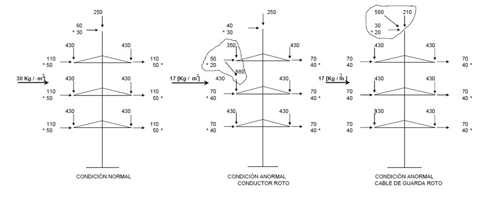
1.1.2 Postes de retención R1| (10°) – AAAC 315 mm2
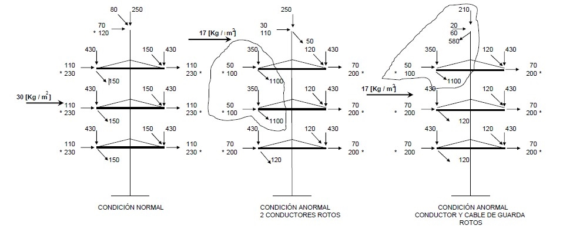
1.1.3 Postes de retención R2 (30°) – AAAC 315 mm2
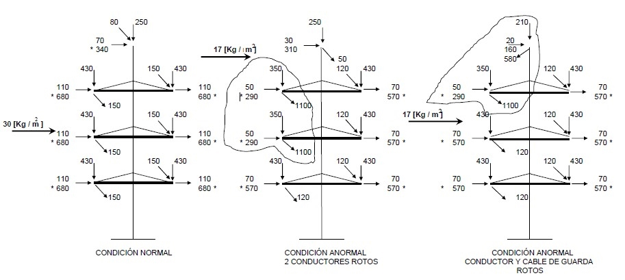
1.1.4 Postes de retención R3 (45°) – AAAC 315 mm2
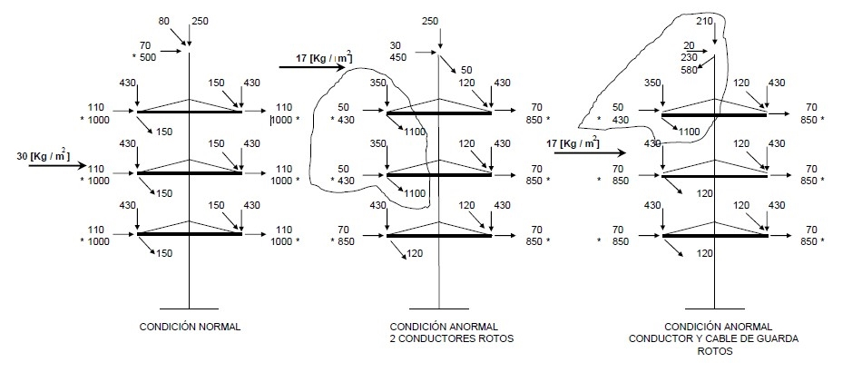
1.1.5 Postes de retención R4 (60°) y Terminal – AAAC 315 mm2
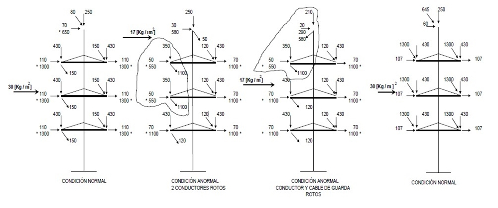
1.1.6 Postes de retención Especial R5 (90°) y Terminal – AAAC 315 mm2 Usado como Terminal
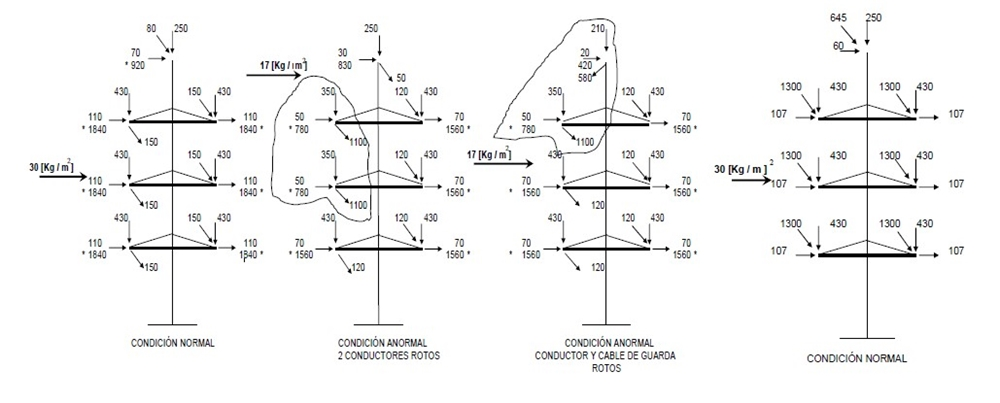
1.2 ÁRBOL DE CARGAS DE TRABAJO POSTES METALICOS DOBLE CIRCUITO 115 kV PARA CONDUCTOR AAAC 630 mm2
1.2.1 Postes de suspensión (2°) – AAAC 630 mm2
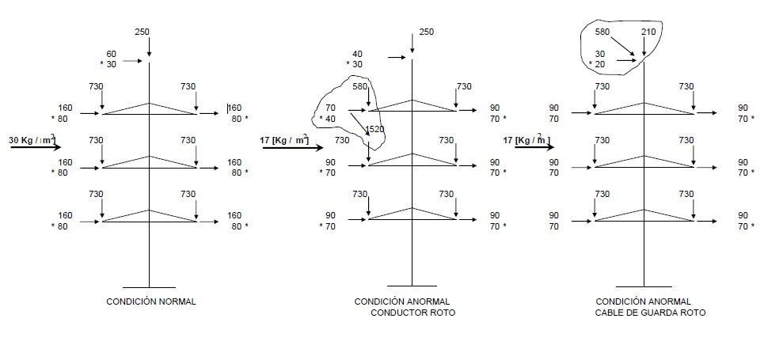
1.2.2 Postes de retención (10°) - AAAC 630 mm2
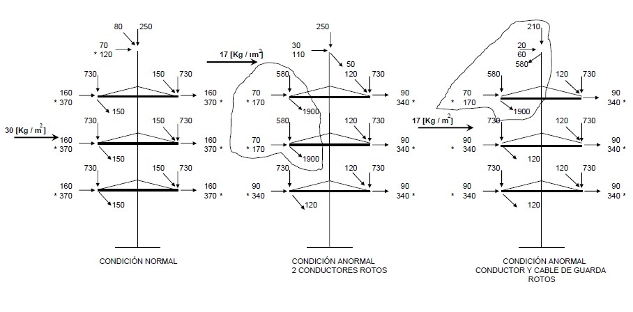
1.2.3 Postes de retención (30°) - AAC 630 mm2
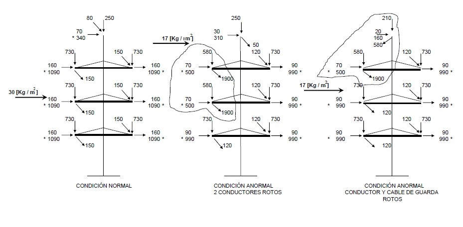
1.2.4 Postes de retención (45°) - AAAC 630 mm2
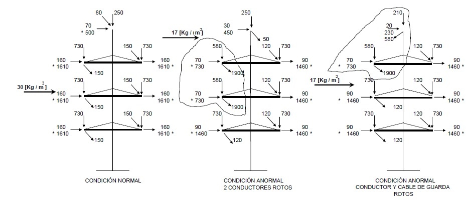
1.2.5 Postes de retención (60°)- AAAC 630 mm2 Usado como Terminal
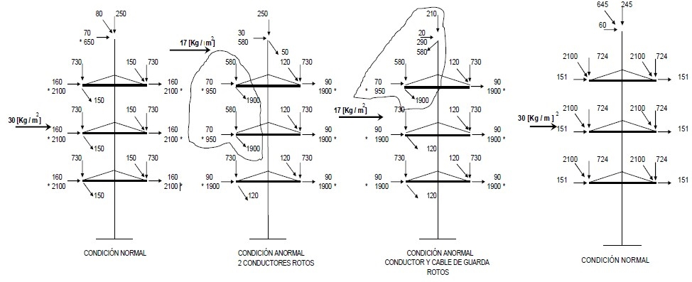
1.2.6 Postes de retención (90°) - AAAC 630 mm2 Usado Como Terminal
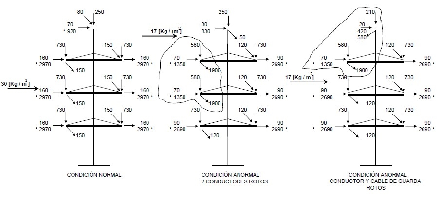
NOTAS:
1. Las cargas indicadas son de trabajo y están en kilogramos
2. En la carga transversal. El valor junto al símbolo * indica la componente debida al ángulo de desviación de la línea. El valor sin símbolo * indica la componente debida a la fuerza del viento.
3. Las cargas últimas están afectadas por los siguientes factores:
- cargas debido al viento: 1.65
- Cargas debido a la tensión mecánica longitudinal del conductor: 1.2
- Cargas debido a la tensión mecánica transversal del conductor: 1.4
- Cargas verticales: 1.1
- Peso propio de la estructura: 1.0
4. La condición anormal de dos conductores rotos deben ser considerada en la combinación de esfuerzo mas severa.
5. En los árboles de carga se indican los valores a usar de presión de viento sobre la estructura, el caso de la condición normal para un viento de 80 [Km/h] y condición anormal para un viento de 60 Km/h].
6. Los árboles de carga aplican para los conductores AAAC 315 mm2 (equiv 605 ACSR) y AAAC 630 mm2
7. Los árboles de carga se han calculado con vano viento: 200 m. y vano peso: 300 m.
18. ANEXO 2 SILUETAS DE LOS POSTES

| TIPO | Distancias siluetas postes (mm). Conductor AAAC 315 o 630 | OBSERVACIONES | |||||||
| A | B | C | D | E | F | G | H | ||
| S1-LP | 1800 | 3300 | 3300 | 1700 | 1700 | 0 | 27000 | 1860 | -Aislador line post. |
| -Suministro de 3 pernos de sujeción | |||||||||
| R1-LP | 1800 | 3300 | 3300 | 1700 | 1700 | 0 | 27000 | 1860 | -Aislador line post. |
| -Suministro de 3 pernos de sujeción | |||||||||
| S1 | 1800 | 3300 | 3300 | 2500 | 2500 | 0 | 27000 | 1860 | - Suministro de 6 Brazos |
| R1 | 1800 | 3300 | 3300 | 2500 | 2500 | 0 | 27000 | 1860 | - Suministro de 6 Brazos |
| R2 | 2800 | 3300 | 3300 | 2500 | 2500 | 0 | 27000 | 1760 | - Suministro de 6 Brazos |
| R3 | 2800 | 3300 | 3300 | 2500 | 2500 | 0 | 27000 | 1760 | - Suministro de 6 Brazos |
| R4 | 2800 | 3300 | 3300 | 2500 | 2800 | 0 | 27000 | 1760 | - Suministro de 6 Brazos |
| R5 | 2800 | 3300 | 3300 | 2500 | 3100 | 0 | 27000 | 1760 | - Suministro de 6 Brazos |
| ESPECIAL | 2800 | 3300 | 3300 | 2500 | 2500 | 2700 | 27000 | 1760 | - Suministro de 9 Brazos |
19. ANEXO 3 DETALLE DE SISTEMA DE SEGURIDAD (ANTICAIDAS)
.jpg)
.jpg)
.jpg)
20. ANEXO 4 DETALLE DE ESCALERA
.jpg)
.jpg)
21. ANEXO 5 DETALLE DE SUJECIÓN CABLE DE GUARDA
.jpg)
.jpg)
.jpg)
.jpg)
22. ANEXO 6 TABLAS DE CARACTERÍSTICAS TÉCNICAS GARANTIZADAS
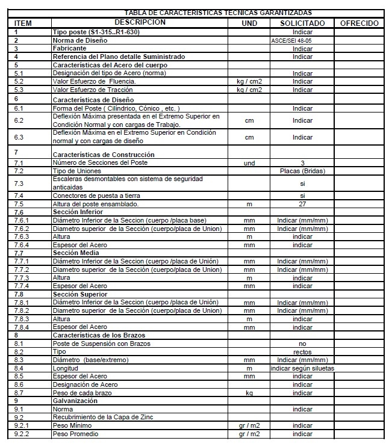
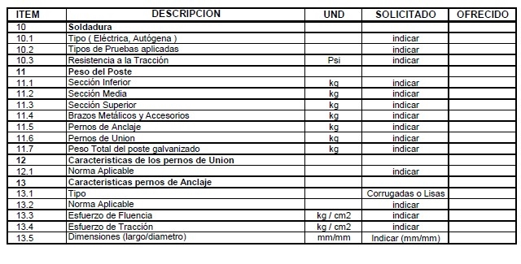